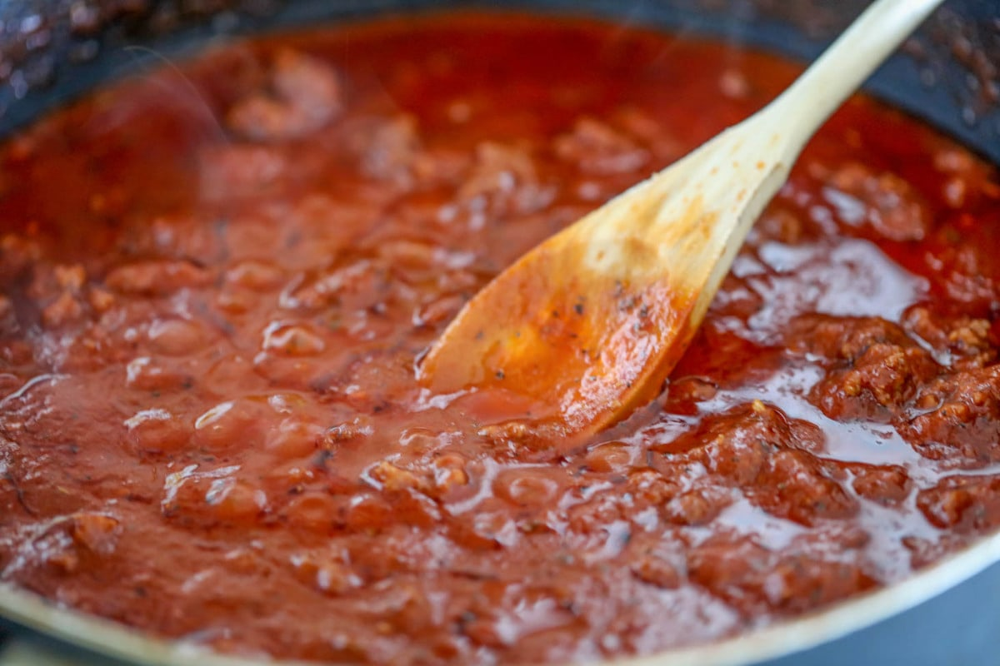
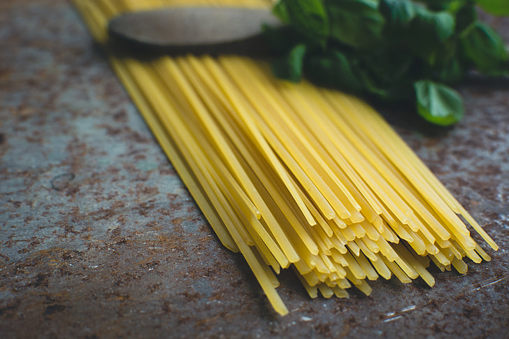
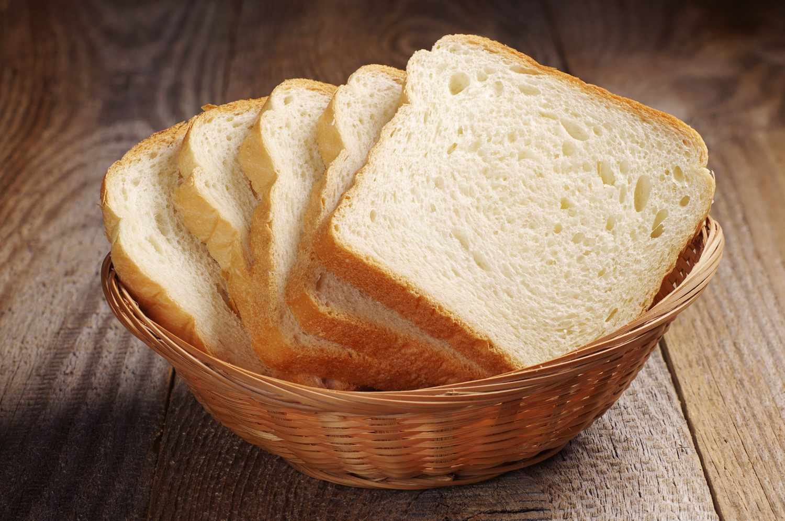
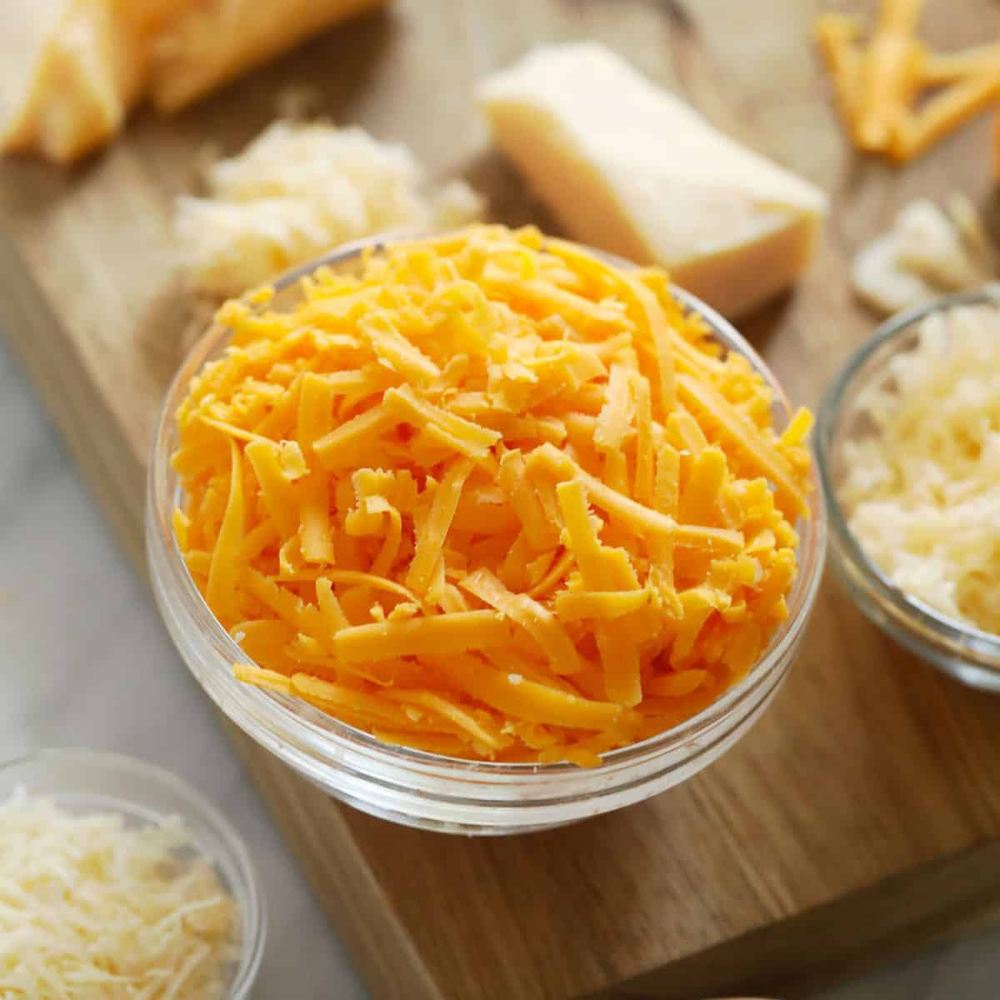
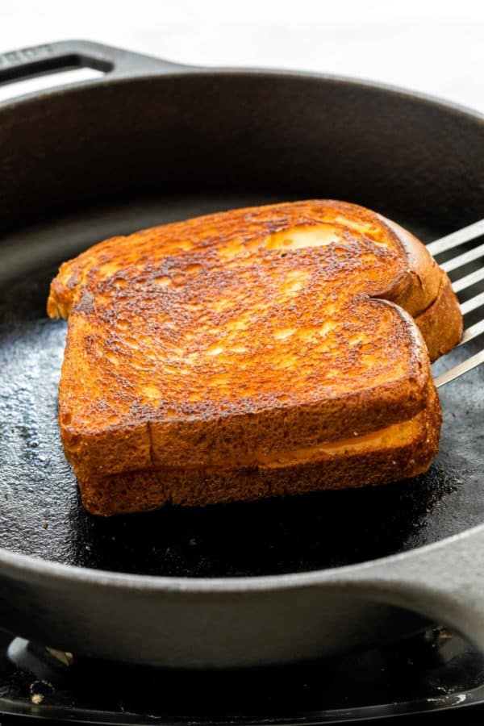
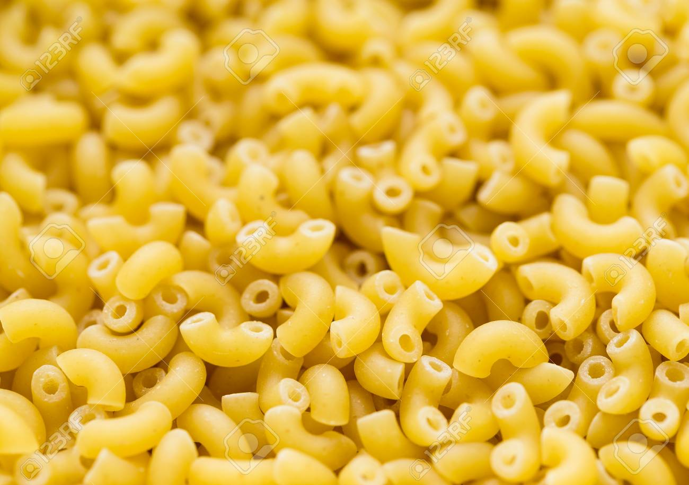
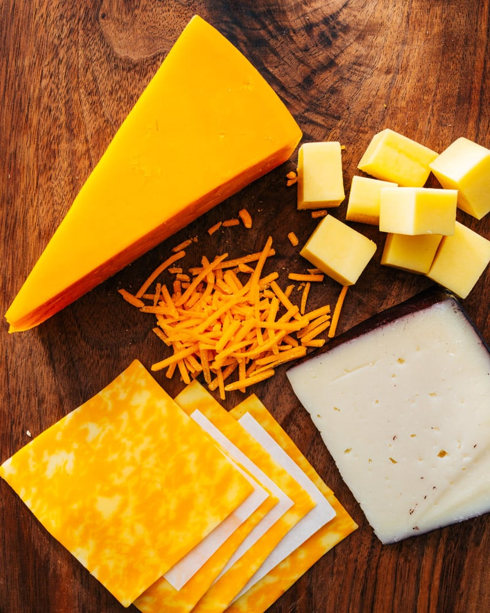
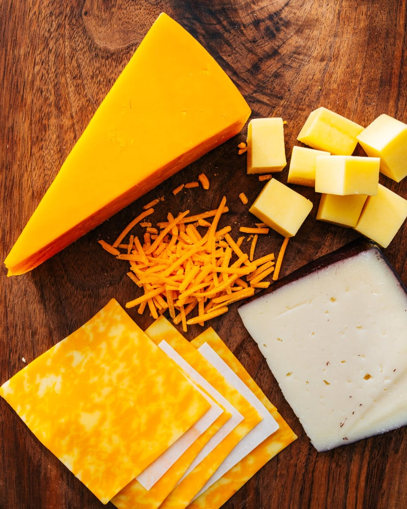

Recipes
Spaghetti
Origin: Italian Source: Own Recipe Category: Main Dish
This spaghetti recipe is really easy and can be made in less than 15 minutes. It's also a basic recipe, so you can also add additional ingredients and customize it.
Recipe Ingredients
- Dry Spaghetti Noodles
- Pasta Sauce
- Cheese
Recipe Steps
- In a pan, add the pasta sauce and just enough water to cover the bottom of the pan together. Bring the mixture to a boil
- Add the spaghetti noodles to the pan and cook according to the packaging instructions
- Once the noodles are cooked, plate on a dish and add cheese on top
Additional Food Images
 
Grilled Cheese Sandwich
Origin: American Source: Own Recipe Category: Comfort Food
This is a simple grilled cheese recipe perfect for anyone who loves cheese. It would also go great with some tomato soup.
Recipe Ingredients
- Sliced Bread
- Shredded Cheese
- Olive oil
Recipe Steps
- In a pan with some olive oil, toast 1 side each of 2 slices of bread
- Once toasted, flip the slices over in the pan
- Place shedded cheese on 1 of the slices of bread, and then place the other slice of bread on top of the cheese
- Continue toasting the sandwich until both sides are golden brown
Additional Food Images
  Double Chocolate Cookies
Origin: Michigan Source: Family Recipe Category: Dessert
My daughter learned to make these cookies at a baking camp at Zingermanns and has tweaked the recipe to fit the taste buds of her siblings. They are extremely sugary so the salt helps to balance it. Note, these cookies are best eaten very quickly.
Recipe Ingredients
- Unsalted Butter
- Granulated Sugar
- Packed Light or Dark Brown Sugar
- Large Egg
- Pure Vanilla Extract
- Semi-Sweet Chocolate Chunks (melted)
- All-Purpose Flour
- Natural Unsweetened Cocoa Powder
- Baking Soda
- Salt
- Semi-Sweet Chocolate Chunks
Recipe Steps
- In a mixing bowl cream together the butter, granulated sugar, and brown sugar
- Add the egg and vanilla extract and beat well
- Add the melted chocolate
- In a separate bowl combine the flour, baking soda, cocoa powder and salt
- Combine the wet and dry ingredients
- Add the unmelted chocolate chunks.
- Form 15 cookies and place on a baking sheet.
- Cook for 12 to 13 minutes at 350 degrees.
Additional Food images


Macaroni and Cheese
Origin: American Source: Own Recipe Category: Main Dish
Macaroni and cheese is a classic dish that many children love. It's also an easy dish to make since it requires very few ingredients.
Recipe Ingredients
- Dry Macaroni Pasta
- Milk
- Cheese
Recipe Steps
- In a pot, combine dry macaroni pasta, milk, and enough water to cover the pasta. Bring the mixture to a boil
- After the mixture boils, let it simmer until the liquid thickens
- Add cheese to the pot and mix
- Plate the pasta and top with more cheese
Additional Food images
 

Zucchini Fritters
Origin: Unknown Source: niftyrecipe.com Category: Main Dish
This quick and easy recipe for zucchini fritters is from a food blog. It uses minimal ingredients and can be done in less than half an hour. They're delicious and filling and go great with dipping sauces.
Recipe Ingredients
- Zucchini
- Egg
- Flour
- Vegetable/seed oil
- Garlic
- Salt and pepper
Recipe Steps
- Combine eggs, salt, and pepper in a bowl and whisk
- Add pressed garlic to the mixture
- Grate the zucchini and squeeze the moisture out of it
- Add the zucchini and flour to the mixture and combine
- Heat the oil in a pan and add dollops of the batter
- Serve with or without dipping sauces
Additional Food images